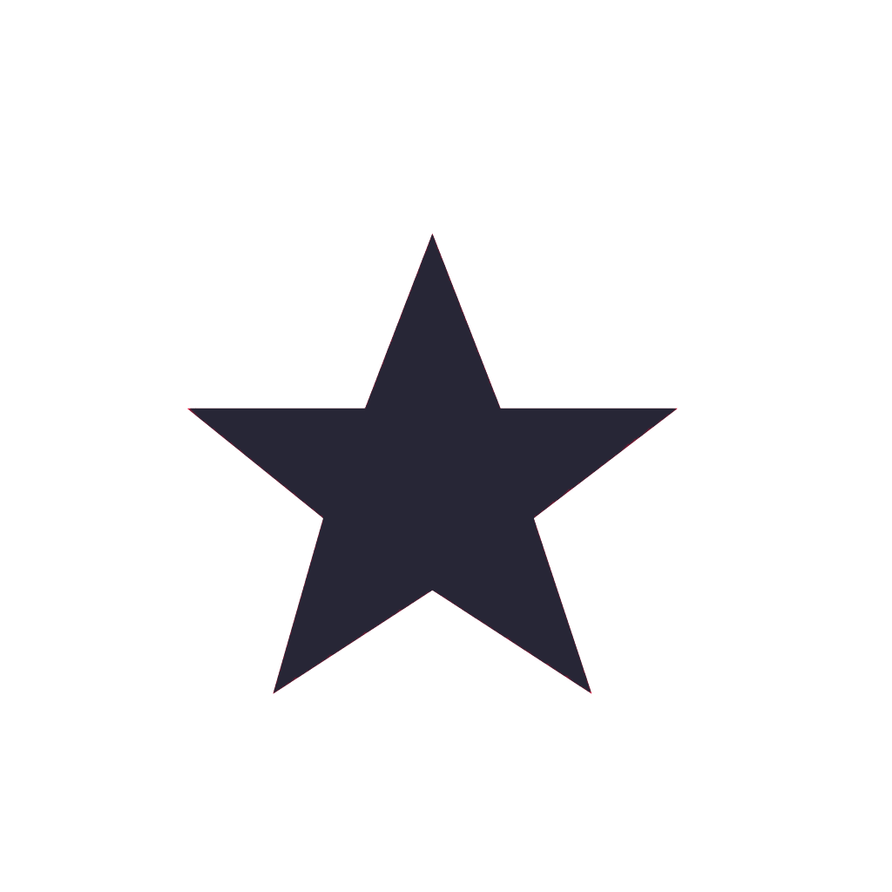

<!--
  Generated template for the DetailPage page.

  See http://ionicframework.com/docs/components/#navigation for more info on
  Ionic pages and navigation.
-->

<ion-content>
  <ion-slides>
    <ion-slide>
      <div class="header">
        <div class="wrap">
          <div class="index-container">
            <div class="plain">No.</div>
            <div class="index">1</div>
            <div class="line"></div>
          </div>
          <div class="date-container">
            <div class="month">十二月</div>
            <div class="year">2018</div>
          </div>
        </div>
        <div class="like">
          
          <div>123</div>
        </div>
      </div>
      <div class="nav">
        
        <p class="pub_name">所及</p>
        <p>发表于</p>
        <p class="native">[爱你]</p>
      </div>

      <div class="content">
        
        <div class="note_content">
          <p>轻轻的我走了,<br>
            正如我轻轻的来； <br>
            我轻轻的招手， <br>
            作别西天的云彩<br></p>
          <p class="avater">-李文轩-</p>
          <span>#图文</span>
        </div>
      </div>

      <div class="foot">
        <!-- <ion-icon (click)="close()" name="md-close"></ion-icon> -->
        <i class="iconfont" (click)="close()" style="padding-left: 10px;color: #bbbbbb;">&#xe642;</i>
        <div class="collection">
          
          <p>收藏</p>
          <p>(156)</p>
        </div>
        <div class="sentiment">
          
          <p>收藏</p>
          <p>(156)</p>
        </div>
      </div>
    </ion-slide>
  </ion-slides>
</ion-content>
